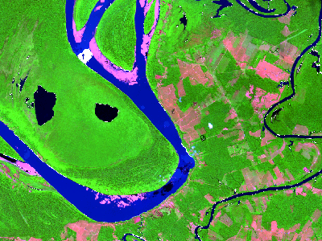
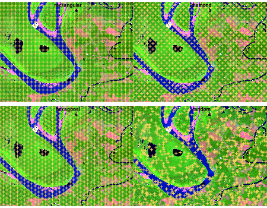
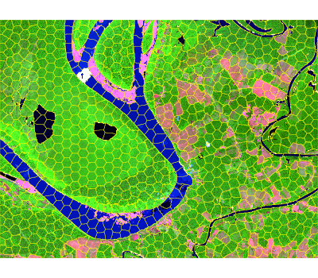
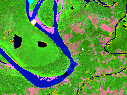

Efficient superpixel segmentation for multi-band imagery using the Simple Non-Iterative Clustering (SNIC) algorithm. The package wraps a C++ implementation with an ergonomic R interface, integrates with terra for raster workflows, and provides helpers for seed placement, plotting, and reproducibility.
Installation
The snic package can be installed from CRAN:
install.packages("snic")Or the development version from GitHub:
# install.packages("remotes")
remotes::install_github("rolfsimoes/snic")The terra package is suggested for raster support and required for most of the plotting utilities demonstrated below.
Highlights
- Implements SNIC with a fast C++ core exposed to R
- Works with in-memory
arraysorterra::SpatRasterobjects - Offers multiple seeding strategies via
snic_grid(type = c("rectangular", "diamond", "hexagonal", "random"))and interactive placement viasnic_grid_manual() - Includes ready-to-plot utilities (
snic_plot()) for quick inspection of inputs, seeds, and resulting segments
Requirements
-
Raster support.
terra (>= 1.7)is suggested and is required for every raster example below. In-memoryarrayworkflows can skip it, but you will lose the quick plotting helpers. -
Animation support.
magickis optional and only needed forsnic_animation(). The chunk is cached so missing the package merely skips the demo.
Why SNIC?
SNIC produces compact superpixels in near-linear time and avoids the iterative updates of SLIC-like algorithms. The snic package exposes those speed benefits through:
- A C++ core that processes moderate Sentinel-2 tiles (thousands x thousands of pixels x multiple bands) in a few seconds on a laptop.
- Native
terraintegration, so you keep CRS, extent, and metadata intact. - Reproducible seeding helpers, which makes parameter sweeps easy to script and compare.
Pipeline overview
The SNIC workflow is short and reproducible:
-
Step 1 - Seed placement. Select or draw a grid of starting seeds that guide where the superpixels will grow. Grids can be generated automatically with
snic_grid()(rectangular, diamond, hexagonal, or random layouts) or crafted interactively withsnic_grid_manual(). -
Step 2 - Segmentation. Run
snic()with the chosen seeds to grow superpixels and inspect the result withsnic_plot()or the animated helpersnic_animation().
Quick start
The example below demonstrates a typical SNIC workflow with the bundled Sentinel-2 subset.
library(snic)
library(terra)
# Sentinel-2 subset packaged with snic
data_dir <- system.file("demo-geotiff", package = "snic", mustWork = TRUE)
bands <- c("B02", "B04", "B08", "B12")
paths <- file.path(
data_dir,
sprintf("S2_20LMR_%s_20220630.tif", bands)
)
s2 <- terra::rast(paths)
names(s2) <- bands
# Visualise RGB composite with superpixel boundaries
snic_plot(
s2,
r = "B12", g = "B08", b = "B02",
stretch = "lin"
)
Step 1 - Seed placement
Seed placement controls the number, shape, and location of the resulting superpixels. The package ships with several grid generators, each returning a two-column (r, c) matrix ready for snic():
-
snic_grid(type = "rectangular")- equally spaced seeds along rows and columns. -
snic_grid(type = "diamond")- staggered rows produce a diagonal pattern that better respects gradients. -
snic_grid(type = "hexagonal")- hexagonal tiling for more isotropic superpixels. -
snic_grid(type = "random")- jittered seeds when structure is irregular or prior knowledge is limited.
Use snic_count_seeds() to forecast how many superpixels a spacing will produce before running the algorithm.
set.seed(42)
grid_types <- c("rectangular", "diamond", "hexagonal", "random")
seed_examples <- lapply(grid_types, function(tp) {
snic_grid(s2, type = tp, spacing = 30L, padding = 0L)
}
)
op <- par(mfrow = c(2, 2), mar = c(1.5, 1.5, 2, 1))
for (i in seq_along(seed_examples)) {
snic_plot(
s2,
r = 4, g = 3, b = 1,
stretch = "lin",
seeds = seed_examples[[i]],
seeds_plot_args = list(pch = 3, col = "#F6D55C", lwd = 2)
)
title(grid_types[i])
}
snic_count_seeds(s2, spacing = 30L)
#> [1] 850
par(op)Interactive placement
Automatic grids get you started quickly, but experts can refine seeds interactively. snic_grid_manual() opens a plotting device where you can add, move, or remove seeds on-the-fly and then feed the result straight into snic():
manual_seeds <- snic_grid_manual(
s2,
base_seeds = seeds_rect,
r = 4, g = 3, b = 1,
stretch = "lin"
)
seg_manual <- snic(
s2,
seeds = manual_seeds,
compactness = 0.1
)Step 2 - SNIC segmentation
Once seeds are defined, pass them to snic() together with the imagery and a compactness factor. The result is a labeled raster that can be visualized alongside the seeds for validation.
seg_hex <- snic(s2, seeds = seed_examples[[3L]], compactness = 0.2)
snic_plot(
s2,
r = "B12", g = "B08", b = "B02",
stretch = "lin",
seg = seg_hex,
seg_plot_args = list(border = "#FFFF00", col = NA, lwd = 0.6)
)
Animated seeding review
snic_animation() replays the seeding process, adding one seed per frame, re-running snic(), and composing the frames into a GIF. Cache the chunk so the animation is generated only once.
if (!requireNamespace("magick", quietly = TRUE)) {
stop("Install the 'magick' package to render the animation.")
}
unlink("man/figures/segmentation-animation.gif")
set.seed(123)
animation_seeds <- snic_grid(s2, type = "random", spacing = 20L, padding = 0L)
gif_path <- snic_animation(
s2,
seeds = animation_seeds,
file_path = "man/figures/segmentation-animation.gif",
max_frames = 20L,
delay = 30,
r = 4, g = 3, b = 1,
stretch = "lin",
seeds_plot_args = list(pch = 16, col = "#00FFFF", cex = 1),
seg_plot_args = list(border = "#FFD700", col = NA, lwd = 0.6),
snic_args = list(compactness = 0.1),
device_args = list(height = 192, width = 256, res = 120, bg = "white")
)
Contributing
Bug reports, feature requests, and pull requests are welcome in the issue tracker. When proposing changes:
- Run
R CMD checkordevtools::check()to keep the package stable. - Re-knit
README.Rmdif you touch code chunks so plots stay in sync. - Mention whether raster dependencies (
terra,magick) were available when reproducing a bug, as it affects plotting and animation paths.